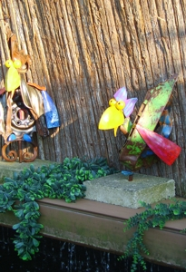

Actueel
Spoeddienst deze periode
Voor wie spoeddienst heeft van maandag 13 juli t/m maandagochtend 27 juli na openingstijden en weekend, zie Dienstverband-Spoednummers.
Voor wie spoeddienst heeft in bovengenoemde periode overdag/tijdens openingstijden, zie Contact.
We hebben geen klantenstop meer! We nemen dus ook, in overleg, nog patiënten aan van buiten de gemeente Valkenburg aan de Geul.
Beoordeling op foto of filmpje
We krijgen steeds vaker foto’s e/o filmpjes gestuurd om te beoordelen. Hierdoor is het niet altijd nodig om met uw huisdier langs te komen en kunnen we aan de hand daarvan in enkele gevallen een diagnose stellen en indien nodig medicatie voorschrijven. Voor het beoordelen en advies krijgt u daarna een factuur toegestuurd per e-mail of post. Indien medicatie nodig is, dan kan alles op de praktijk gepind worden of a contant voldaan worden.
Herinneringskaarten
Door de drukte liggen we met het sturen van herinneringskaarten achter. Voor mensen waar de hond e/o kat naar pension gaat of de grens over, houdt het zelf svp goed bij. Eindverantwoordelijke is en blijft de eigenaar.
Op vakantie met uw huisdier
Regels per land i.v.m. vakantiebestemming kunnen per land nagekeken worden op www.licg.nl.
Blauwtong
Volgend jaar beginnen we met boosteren tegen blauwtong van volwassen schapen, geiten en alpaca’s in maart. De pasgeboren dieren kunnen op 1 of 2 maanden leeftijd, afhankelijk van de voorhanden entstof.
Nieuw in het assortiment
Nieuw in het assortiment is Némisol injectable. Is ontworming voor o.a. schapen o.b.v. levamisole.
